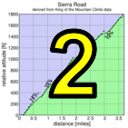

|
 |
| pl | # | name | team | cat | time | mph | fph | age- adjusted score |
|---|---|---|---|---|---|---|---|---|
| 1 | 126 | Elizabeth Reid | 55+ | 30:02 | 10.59 | 3876 | 168.54 | |
| 2 | 23 | Mary Ellen Allen | Sr's & Mr's of No Mercy | 50+++ | 37:53 | 8.39 | 3073 | 147.32 |
| 3 | 39 | Helen Casabona | Pen Velo/Pomodoro | 50+ | 33:45 | 9.42 | 3449 | 147.10 |
| 4 | 140 | Marty Scott | LGBRC | 55+ | 34:45 | 9.15 | 3350 | 146.72 |
| 5 | 17 | Lynn Sestak | The Brown Zone | 55+ | 37:10 | 8.56 | 3132 | 136.66 |
| 6 | 34 | McLovely Brown | The Brown Zone | Mother Of Two | 31:49 | 9.99 | 3658 | 134.41 |
| 7 | 138 | Amber Schult | LGBRC | 40+ | 35:09 | 9.05 | 3312 | 128.74 |
| 8 | 50 | Christina Davis | LGBRC | 45+ | 38:02 | 8.36 | 3060 | 125.20 |
| 9 | 94 | Louise Kobin | No team | 45+ | 37:29 | 8.48 | 3105 | 123.74 |
| 10 | 41 | Beverly Chaney | San Jose Bike Club | 50+ | 39:44 | 8.00 | 2930 | 121.27 |
| 11 | 62 | Nicole Evans | Pen Velo/Pomodoro | 30+ | 39:06 | 8.13 | 2977 | 108.77 |
| 12 | 142 | Ariadne Smith | Diablo | 25+ | 39:40 | 8.02 | 2934 | 107.18 |
| 13 | 60 | Lisa Emmerich | Sr's & Mr's of No Mercy | 50+ | 48:06 | 6.61 | 2420 | 103.55 |
| 14 | 52 | Bonnie Denoyer | Scott | 45+ | 45:05 | 7.05 | 2582 | 101.54 |
| 15 | 148 | Helena Stolka | Low-Key | 50+ | 57:57 | 5.49 | 2009 | 82.39 |
| pl | # | name | team | cat | time | mph | fph | age- adjusted score |
|---|---|---|---|---|---|---|---|---|
| 1 | 28 | Nick Bax | Stanford Cycling | Hungover Cat 1 | 24:59 | 12.73 | 4659 | 141.98 |
| 2 | 99 | Bill Laddish | Team CVC | 35+ | 27:35 | 11.53 | 4220 | 136.58 |
| 3 | 122 | Stefano Profumo | Squadra SF | 35+ | 26:02 | 12.22 | 4471 | 136.50 |
| 4 | 127 | Russell Reid | 60+ | 32:43 | 9.72 | 3558 | 134.04 | |
| 5 | 112 | Rob Nast | Plus 3 | 50+ | 29:40 | 10.72 | 3924 | 133.01 |
| 6 | 33 | Bill Brier | Team Fremont FFBC p/b Chipotle | 50+ | 29:59 | 10.61 | 3882 | 132.66 |
| 7 | 61 | Chris Evans | Squadra SF | 2 | 26:45 | 11.89 | 4351 | 132.33 |
| 8 | 129 | Doug Reynolds | NightRiders | 60+ | 33:52 | 9.39 | 3437 | 129.79 |
| 9 | 109 | Shahram Moatazedi | LGBRC | 40+ | 28:55 | 11.00 | 4025 | 126.98 |
| 10 | 29 | Jeffrey Baxter | LGBRC | 45+ | 29:49 | 10.67 | 3904 | 126.79 |
| 11 | 45 | David Collet | Pen Velo/Pomodoro | 40+ | 29:29 | 10.79 | 3948 | 126.51 |
| 12 | 49 | Andy Crews | Diablo | 40+ | 29:39 | 10.73 | 3926 | 126.28 |
| 13 | 84 | Peter Ingram | Steely Man | 55+ | 33:26 | 9.51 | 3482 | 126.07 |
| 14 | 16 | Joe Fant | The Brown Zone | 55+ | 32:43 | 9.72 | 3558 | 125.64 |
| 15 | 14 | Rich McLovin Brown | The Brown Zone | 35+ | 28:48 | 11.04 | 4042 | 125.18 |
| 16 | 146 | Daryl Spano | Undiscovered Country Tours | 45+ | 30:40 | 10.37 | 3796 | 125.10 |
| 17 | 90 | Glen Kinion | Sr's & Mr's of No Mercy | 50+ | 32:11 | 9.88 | 3617 | 124.99 |
| 18 | 43 | Frank Clark | Undiscovered Country Tours | 2 | 28:30 | 11.16 | 4084 | 124.46 |
| 19 | 165 | Allen Wulczynski | Team Bici | 50+ | 32:02 | 9.93 | 3634 | 123.66 |
| 20 | 156 | Mike Urbina | NightRiders | 50+ | 32:24 | 9.81 | 3593 | 123.50 |
| 21 | 75 | BIll Harkola | Pen Velo/Pomodoro | 55+ | 33:43 | 9.43 | 3452 | 121.97M |
| 22 | 104 | Todd Markelz | 5 35+ | 29:02 | 10.95 | 4009 | 121.83 | |
| 23 | 65 | David Fitch | San Jose Bike Club | 70+ | 39:39 | 8.02 | 2936 | 121.73 |
| 24 | 12 | Will Von Kaenel | LGBRC | 55+ | 34:01 | 9.35 | 3422 | 120.80 |
| 25 | 81 | Tick Houk | The Brown Zone | 55+ | 33:40 | 9.45 | 3457 | 120.71 |
| 26 | 119 | Jim Perreira | San Jose Bike Club | 45+ | 31:56 | 9.96 | 3645 | 120.02 |
| 27 | 121 | Thomas Preisler | San Jose Bike Club | 55+ | 35:25 | 8.98 | 3287 | 119.21 |
| 28 | 22 | Bruno Acklin | Clagnuts | 50+ | 34:09 | 9.31 | 3408 | 118.03 |
| 29 | 32 | Randy Bowman | Cycleholics | 60+ | 37:27 | 8.49 | 3108 | 117.95 |
| 30 | 92 | Terrance Kloeckl | Younger Next Year | 50+ | 34:22 | 9.25 | 3387 | 117.57 |
| 31 | 89 | Mark King | Equipe Flamme Rouge | 45+ | 32:48 | 9.70 | 3549 | 117.52 |
| 32 | 82 | Martin Hyland | Diablo | 55+ | 35:56 | 8.85 | 3239 | 116.46 |
| 33 | 133 | Dave Rossow | LuxVue-SunPower | 45+ | 32:29 | 9.79 | 3583 | 115.97 |
| 34 | 51 | Giel De Nijs | Flying Dutchmen | 1 | 30:29 | 10.43 | 3818 | 115.81 |
| 35 | 153 | Nils Tikkanen | LA Face With An Oakland Booty | 30:35 | 10.40 | 3806 | 115.42 | |
| 36 | 59 | Christopher Elbo | Squadra SF | 35+ | 31:24 | 10.13 | 3707 | 114.99 |
| 37 | 67 | Klaus Fleischmann | Pen Velo/Pomodoro | 45+ | 32:54 | 9.67 | 3538 | 114.82 |
| 38 | 161 | Alan Weatherall | San Jose Bike Club | 45+ 4 | 34:40 | 9.17 | 3358 | 114.56 |
| 39 | 25 | David Anderson | Team Anderson | 55+ | 36:03 | 8.82 | 3229 | 113.91 |
| 40 | 137 | Eric Schmidt | Tech Executive | 31:15 | 10.18 | 3725 | 113.10 | |
| 41 | 48 | Adam Coy | Diablo | Men | 31:18 | 10.16 | 3719 | 112.72 |
| 42 | 71 | Bruce Gardner | Sr's & Mr's of No Mercy | 35+ | 32:50 | 9.69 | 3545 | 112.67 |
| 43 | 63 | Tommy Evans | Pen Velo/Pomodoro | 30+ | 31:21 | 10.14 | 3713 | 112.54 |
| 44 | 64 | David Fisch | Cycleholics | 55+ Cat 4 | 36:30 | 8.71 | 3189 | 111.77 |
| 45 | 95 | Patrick Konsor | Unattached | 25+ | 31:46 | 10.01 | 3664 | 111.03 |
| 46 | 117 | Frank Paysen | Chain Reaction | 50+ | 36:18 | 8.76 | 3207 | 110.72 |
| 47 | 118 | Ramon Periquet | Team CVC | 50+ | 35:45 | 8.90 | 3256 | 110.64 |
| 48 | 40 | Peter Cathcart | San Jose Bike Club | 50+ | 36:33 | 8.70 | 3185 | 110.38 |
| 49 | 108 | Ed Miller | SLACer | 70+ | 44:54 | 7.08 | 2592 | 110.23 |
| 50 | 159 | David Vrane | Sr's & Mr's of No Mercy | 50+ | 35:32 | 8.95 | 3276 | 109.70 |
| 51 | 128 | Angel Resendez | at the moment | 5 | 32:27 | 9.80 | 3587 | 108.68 |
| 52 | 96 | Scott Krahn | LGBRC | 30+ | 32:27 | 9.80 | 3587 | 108.64 |
| 53 | 101 | Robert Lojek | 35+ | 33:02 | 9.63 | 3524 | 108.32 | |
| 54 | 18 | Giles Douglas | 40+ | 33:44 | 9.43 | 3451 | 107.74 | |
| 55 | 66 | Andrew Fitzhugh | 50+ | 36:57 | 8.61 | 3150 | 105.95 | |
| 56 | 85 | Tim Irvine | LGBRC | 40+ | 35:05 | 9.06 | 3318 | 105.65 |
| 57 | 125 | Matt Redmond | Squadra SF | U23 | 33:28 | 9.50 | 3478 | 105.45 |
| 58 | 86 | Tom Jakaby | Buycell | 55+ | 39:10 | 8.12 | 2972 | 104.18 |
| 59 | 91 | Larry Klein | Grumpy Old Men (GOM) | 50+ | 38:41 | 8.22 | 3009 | 103.73 |
| 60 | 114 | Bart Niechwiej | 35+ | 35:18 | 9.01 | 3297 | 101.51 | |
| 61 | 35 | Nicholas Brummell | Atlas | 50+ Slower Than A Turkey | 39:21 | 8.08 | 2958 | 100.98 |
| 62 | 31 | Geoffrey Bower | DASH | 30+ | 35:09 | 9.05 | 3312 | 100.13 |
| 63 | 145 | Ray Smith | Team CVC | 55+ | 42:08 | 7.55 | 2763 | 99.78 |
| 64 | 102 | Zahan Malkani | SF2G | Not Winning | 35:25 | 8.98 | 3287 | 99.44 |
| 65 | 162 | Han Wen | Grumpy Old Men (GOM) | 45+ | 38:06 | 8.35 | 3055 | 99.18 |
| 66 | 130 | Caleb Richardson | Team CVC | 30+ | 35:38 | 8.92 | 3267 | 98.75 |
| 67 | 47 | Richard Contreras | 55+ | 41:56 | 7.58 | 2776 | 98.53 | |
| 68 | 30 | Bernard Bell | PBCC | 50+ | 40:57 | 7.77 | 2842 | 98.24 |
| 69 | 69 | Danny Froeming | Sr's & Mr's of No Mercy | 50+ | 39:44 | 8.00 | 2930 | 98.06 |
| 70 | 131 | Bruce Roberts | Fat City Athletic Club | 220 Lb Clydesdale | 43:19 | 7.34 | 2687 | 98.05 |
| 71 | 115 | Sani Obhodas | the campbell crew | 25+ | 36:11 | 8.79 | 3217 | 97.21 |
| 72 | 24 | Rich Allen | Sr's & Mr's of No Mercy | 55+ | 45:48 | 6.94 | 2541 | 97.13 |
| 73 | 144 | Kevin Smith | LGBRC | 50+ | 41:36 | 7.64 | 2798 | 96.45 |
| 74 | 135 | Wink Saville | DASH | 65+ | 46:11 | 6.89 | 2520 | 95.71 |
| 75 | 139 | Jeremy Scott | Scott | 40+ | 38:49 | 8.19 | 2999 | 95.53 |
| 76 | 110 | Ilya Moskovko | the campbell crew | 25+ | 36:50 | 8.63 | 3160 | 95.46 |
| 77 | 160 | Brian Ward | Zombie Raccoon | 40+ | 38:34 | 8.25 | 3018 | 94.76 |
| 78 | 76 | Clay Heberly | LGBRC | 35+ | 38:00 | 8.37 | 3063 | 94.71 |
| 79 | 150 | Andy Sutterfield | San Jose State University | 20+ | 37:17 | 8.53 | 3122 | 94.36 |
| 80 | 124 | Mihai R. | 35+ | 37:22 | 8.51 | 3115 | 94.07 | |
| 81 | 107 | Kristofer McQueen | Diablo | 40+ | 39:53 | 7.97 | 2919 | 90.62 |
| 82 | 97 | Frank Kratzer | San Jose Bike Club | 50+ | 44:03 | 7.22 | 2642 | 89.12 |
| 83 | 134 | Koushik Sampath | LGBRC | 25+ | 39:28 | 8.06 | 2949 | 88.97 |
| 84 | 100 | Garrett Lau | LGBRC | 45+ | 43:39 | 7.29 | 2667 | 88.64 |
| 85 | 141 | Raj Singh Singh | Team Bici | 50- | 43:45 | 7.27 | 2661 | 88.62 |
| 86 | 151 | Richard Tasker | #FoothillFridays | 40+ | 40:49 | 7.79 | 2852 | 88.38 |
| 87 | 20 | SAMIR ABOULHOUDA | Western Wheelers | Make It To The Top | 44:09 | 7.20 | 2636 | 88.30 |
| 88 | 58 | Pierre Doussiere | My LowRacer & myself | 50+ | 45:46 | 6.95 | 2543 | 87.47 |
| 89 | 154 | Adam Tow | Grumpy Old Men (GOM) | Infinity | 41:13 | 7.72 | 2824 | 87.02 |
| 90 | 164 | Harvey Wolfson | Diablo | 65+ | 51:16 | 6.20 | 2270 | 86.73 |
| 91 | 74 | Marshall Gusman | DASH | See What I've Got | 40:35 | 7.84 | 2868 | 86.47 |
| 92 | 38 | Kley Cardona | etc | 50+ | 46:33 | 6.83 | 2501 | 85.31 |
| 93 | 36 | Scott Byer | 45+ | 44:49 | 7.10 | 2597 | 85.04M | |
| 94 | 111 | John Murphy | Team CVC | 25+ | 41:25 | 7.68 | 2810 | 84.69 |
| 95 | 44 | Kevin Colagiovanni | Team Dud | 30+ | 41:28 | 7.67 | 2807 | 84.59 |
| 96 | 53 | Gilles Denoyer | Scott | 40+ | 44:26 | 7.16 | 2620 | 82.67 |
| 97 | 98 | Romain Laboisse | Palo Verde Velo | 35+ | 43:55 | 7.24 | 2650 | 81.50 |
| 98 | 83 | Brandon Iles | DASH | 30+ | 44:07 | 7.21 | 2638 | 79.40 |
| 99 | 132 | Paul Rode | LGBRC | 35+ | 44:37 | 7.13 | 2609 | 79.39 |
| 100 | 68 | Stephen Fong | Grumpy Old Men (GOM) | 45+ | 47:55 | 6.64 | 2429 | 78.98 |
| 101 | 143 | Gregory P Smith | Zombie Raccoon | Dark Meat & Stuffing | 45:58 | 6.92 | 2532 | 77.85 |
| 102 | 113 | Ronald Ng | Bike Commuter Cabal | 50+ | 50:20 | 6.32 | 2313 | 77.68 |
| 103 | 103 | Thomas Maltbaek | Sequoia sempervirens | 25+ | 46:00 | 6.91 | 2530 | 76.10 |
| 104 | 26 | Stephen Anderson | Team Fun | 20+ | 46:34 | 6.83 | 2500 | 75.20 |
| pl | # | name | team | cat | time | mph | fph | age- adjusted score |
|---|---|---|---|---|---|---|---|---|
| 1 | 55 | Emma Dixon | 35+ | 38:09 | 8.34 | 3051 | 100.90 | |
| 56 | Jonathan Dixon | 35+ | ||||||
| 2 | 77 | Kim Hill | LGBRC | 40+ | 42:28 | 7.49 | 2741 | 90.44 |
| 78 | Rich Hill | LGBRC | 45+ | |||||
| 3 | 37 | Pat Callahan | Quadzilla Racing | 45+ | 62:14 | 5.11 | 1870 | 61.22 |
| 167 | Ping Yin | Quadzilla Racing | Trying To Get 100points! |
| pl | # | name | team | cat | time | mph | fph | age- adjusted score |
|---|---|---|---|---|---|---|---|---|
| 1 | 6 | Bill Bushnell | Low-Key | In Cognito | 17:51 | 17.82 | 6521 | 114.89 |
| pl | team | age- adjusted score |
riders |
|---|---|---|---|
| 1 | LGBRC | 402.44 | Christina Davis, Jeffrey Baxter, Will Von Kaenel, Rich Hill, Garrett Lau, Koushik Sampath, Paul Rode, Kim Hill, Amber Schult, Shahram Moatazedi, Marty Scott, Tim Irvine, Kevin Smith, Clay Heberly, Scott Krahn |
| 2 | The Brown Zone | 396.72 | Rich McLovin Brown, Joe Fant, Lynn Sestak, McLovely Brown, Tick Houk |
| 3 | Pen Velo/Pomodoro | 395.58 | BIll Harkola, Tommy Evans, Helen Casabona, Nicole Evans, David Collet, Klaus Fleischmann |
| 4 | Sr's & Mr's of No Mercy | 384.97 | Glen Kinion, Danny Froeming, Bruce Gardner, Lisa Emmerich, Mary Ellen Allen, David Vrane, Rich Allen |
| 5 | Squadra SF | 383.81 | Stefano Profumo, Chris Evans, Matt Redmond, Christopher Elbo |
| 6 | San Jose Bike Club | 363.02 | Beverly Chaney, Thomas Preisler, Jim Perreira, David Fitch, Peter Cathcart, Frank Kratzer, Alan Weatherall |
| 7 | Diablo | 355.46 | Kristofer McQueen, Harvey Wolfson, Ariadne Smith, Martin Hyland, Adam Coy, Andy Crews |
| 8 | 350.35 | Eric Schmidt, Emma Dixon, Giles Douglas, Nils Tikkanen, Todd Markelz, Jonathan Dixon, Scott Byer, Robert Lojek, Mihai R., Bart Niechwiej | |
| 9 | Team CVC | 346.99 | Ramon Periquet, Caleb Richardson, John Murphy, Bill Laddish, Ray Smith |
| 10 | Grumpy Old Men (GOM) | 289.93 | Adam Tow, Larry Klein, Stephen Fong, Han Wen |
| 11 | DASH | 282.31 | Brandon Iles, Marshall Gusman, Wink Saville, Geoffrey Bower |
| 12 | Scott | 279.74 | Gilles Denoyer, Bonnie Denoyer, Jeremy Scott |
| 13 | NightRiders | 253.29 | Mike Urbina, Doug Reynolds |
| 14 | Undiscovered Country Tours | 249.56 | Daryl Spano, Frank Clark |
| 15 | Cycleholics | 229.72 | David Fisch, Randy Bowman |
| 16 | Team Bici | 212.28 | Raj Singh Singh, Allen Wulczynski |
| 17 | Low-Key | 197.28 | Bill Bushnell, Helena Stolka |
| 18 | the campbell crew | 192.68 | Ilya Moskovko, Sani Obhodas |
| 19 | Zombie Raccoon | 172.61 | Brian Ward, Gregory P Smith |
| 20 | Stanford Cycling | 141.98 | Nick Bax |
| 21 | Plus 3 | 133.01 | Rob Nast |
| 22 | Team Fremont FFBC p/b Chipotle | 132.66 | Bill Brier |
| 23 | Steely Man | 126.07 | Peter Ingram |
| 24 | No team | 123.74 | Louise Kobin |
| 25 | Clagnuts | 118.03 | Bruno Acklin |
| 26 | Younger Next Year | 117.57 | Terrance Kloeckl |
| 27 | Equipe Flamme Rouge | 117.52 | Mark King |
| 28 | LuxVue-SunPower | 115.97 | Dave Rossow |
| 29 | Flying Dutchmen | 115.81 | Giel De Nijs |
| 30 | Team Anderson | 113.91 | David Anderson |
| 31 | Unattached | 111.03 | Patrick Konsor |
| 32 | Chain Reaction | 110.72 | Frank Paysen |
| 33 | SLACer | 110.23 | Ed Miller |
| 34 | at the moment | 108.68 | Angel Resendez |
| 35 | Buycell | 104.18 | Tom Jakaby |
| 36 | Atlas | 100.98 | Nicholas Brummell |
| 37 | SF2G | 99.44 | Zahan Malkani |
| 38 | PBCC | 98.24 | Bernard Bell |
| 39 | Fat City Athletic Club | 98.05 | Bruce Roberts |
| 40 | San Jose State University | 94.36 | Andy Sutterfield |
| 41 | #FoothillFridays | 88.38 | Richard Tasker |
| 42 | Western Wheelers | 88.30 | SAMIR ABOULHOUDA |
| 43 | My LowRacer & myself | 87.47 | Pierre Doussiere |
| 44 | etc | 85.31 | Kley Cardona |
| 45 | Team Dud | 84.59 | Kevin Colagiovanni |
| 46 | Palo Verde Velo | 81.50 | Romain Laboisse |
| 47 | Bike Commuter Cabal | 77.68 | Ronald Ng |
| 48 | Sequoia sempervirens | 76.10 | Thomas Maltbaek |
| 49 | Team Fun | 75.20 | Stephen Anderson |
| 50 | Quadzilla Racing | 61.22 | Pat Callahan |